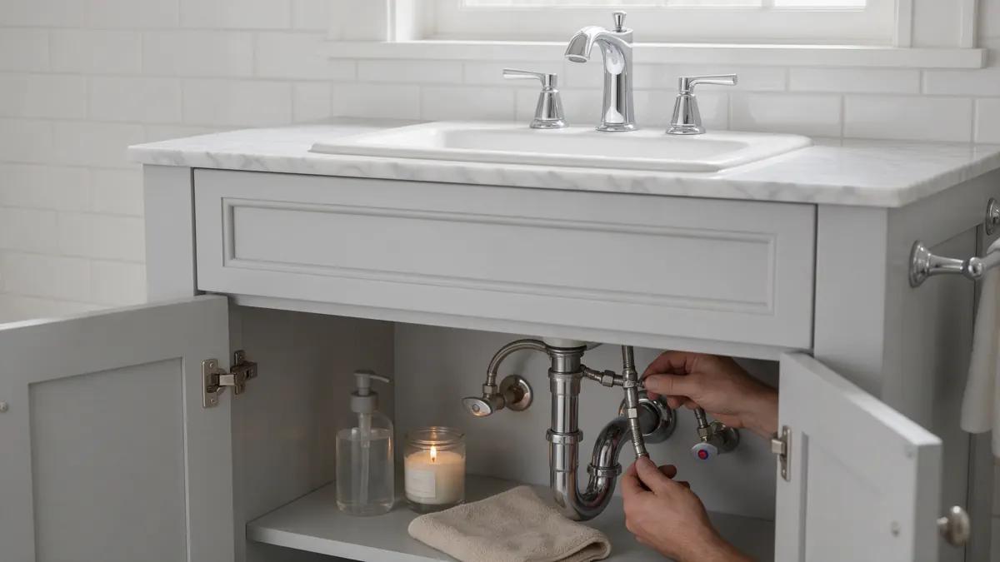

Bathroom Plumbing Handbook for Colorado Homeowners

A bathroom brings together supply lines, drains, vents and fixtures in a small space, so small faults show quickly. This handbook helps Colorado homeowners sort out what is wrong, plan a remodel with fewer surprises, and prepare good questions. Plumbing Pros Colorado connects you with independent local plumbers who handle bathroom work in your area.
Walk through the room
Run each fixture for a minute and listen. Note slow drains, weak flow, drips under the vanity and any water stains on the ceiling below. Look at caulk lines around the tub and shower, which often hide small leaks.
- Slow tub or sink drain
- Low shower flow
- Drip under the vanity
- Soft floor near the tub
- Fan not clearing steam
Common trouble spots and likely causes
Low shower flow often traces to a clogged showerhead or cartridge. A shower that swings hot and cold can mean a worn mixing valve. Gurgling sink drains may suggest a venting problem, and a slow tub often has hair caught in the trap.
Soft or stained flooring near the tub deserves prompt attention because hidden leaks can rot subfloor over time.
Showerheads clog with mineral scale quickly, and soaking one in vinegar is a common first step before assuming a larger fault.
Planning a remodel with the plumbing in mind
Moving a toilet or shower means adjusting drain slope, venting and supply lines, and the location of floor joists can limit options. Walk-in showers need correct waterproofing and drain placement.
Bring the plumber in early, before tile and cabinetry are chosen, so fixtures fit the rough-in and shutoff valves are placed where they can be reached later.
Questions to ask your plumber
Ask who handles permits, what inspection steps occur, and how long the water may be off. Ask whether valves will be accessible, and how the shower valve will be tested before walls close.
Also ask about pipe material, ventilation and whether a pressure-balancing or thermostatic valve suits your household.
Colorado considerations
Hard water leaves scale on showerheads, aerators and valve cartridges, so cleaning and softening matter in Front Range homes. Basements in finished walkout homes near the foothills may need an ejector pump for bathroom drains below the sewer line.
Cold exterior walls can chill supply lines in older bathrooms. As a referral line, we connect you with an independent plumber; the plumber performs the work and explains the plan.
Older homes in places like Denver's Capitol Hill or Boulder's University Hill may hide galvanized supply lines or cast iron drains behind tile, so a short inspection before demolition can prevent mid-project surprises.
Ventilation, moisture and hidden damage
Moisture is the quiet enemy of bathrooms. A fan that fails to clear steam leaves walls, ceilings and the vanity damp, and slow leaks can look like ordinary humidity. Peeling paint, a musty smell or grout that keeps darkening are all worth investigating.
Check the shutoff valves under the sink and behind the toilet for weeping at the stem. Look at the ceiling in the room below for stains, and press gently on flooring near the tub to see whether it feels spongy. A plumber can pressure test the supply lines and look at the tub overflow gasket, a common hidden leak point.
Catching these signs early usually means a smaller repair, and it lets you decide on a remodel or fixture upgrade when you choose, not under pressure from water damage.
Frequently asked questions
What makes a vanity drain gurgle?
Gurgling often means air is struggling to enter the drain, either from a partial clog or a venting issue. If several fixtures gurgle together, tell the plumber, since it can point toward the main line.
What causes a shower to run hot then cold?
A worn cartridge or mixing valve, a water heater that cannot keep up, or pressure swings when other fixtures run. Note the pattern and share it with the plumber.
Do bathroom plumbing changes need a permit?
Often yes when you move drains, vents or supply lines, though simple fixture swaps may not. Requirements vary by city and county, so ask the plumber or building department.
Can I replace a vanity faucet myself?
Many homeowners do, using the stop valves to isolate water. Trouble starts with corroded shutoffs that will not close or leak when turned. In that case, stop and call a plumber.
What is a basement bathroom ejector pump?
It collects wastewater in a sealed basin and pumps it up to the sewer line when a bathroom sits below it. It needs periodic checks, a vent and a working alarm in some setups.
Why is my toilet and sink water cloudy at times?
Tiny air bubbles often make water look milky and clear within moments. That is common in cold weather and high pressure. If the water looks discolored or leaves sediment, tell the plumber, since it can signal pipe or heater issues.
Related plumbing services
Bathroom Plumbing by city
Ready to talk to someone? Call (720) 794-0974 or visit plan bathroom plumbing with a local plumber.